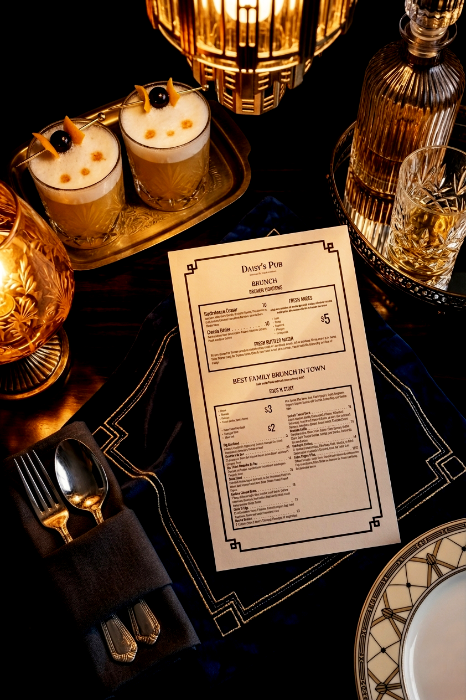
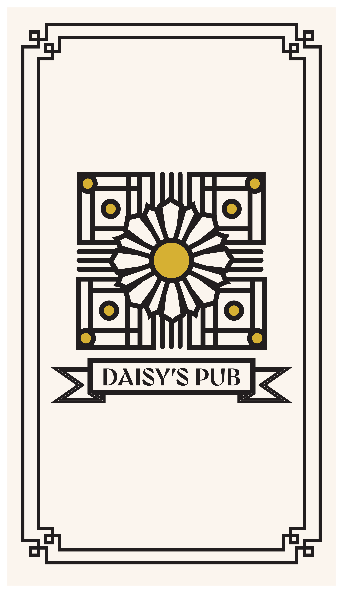

03 — Mockups
The menu placed in context — on a candlelit table and held in hand — shows how the design performs in a real dining environment. The Art Deco aesthetic translates naturally into an upscale gastropub setting.


Exam project — 2 hour timeframe
Daisy's Pub is a concept menu designed under exam conditions — 2 hours, start to finish. The challenge was to develop a complete visual identity and apply it across a multi-page menu that felt cohesive, legible, and premium.
The design draws on Art Deco influences — geometric ornamental borders, structured typography, and a restrained gold and black palette — to create a menu that feels upscale without being inaccessible.
Role: Visual identity, typography, layout, print design.
Tools: Affinity Publisher, Affinity Designer.
Deliverables: Menu cover, full multi-page menu layout, print-ready files.
Timeline: 2-hour timed exam.
Designing a complete, print-ready menu in 2 hours requires fast decision-making on hierarchy, spacing, and visual consistency. Every element — from the daisy motif to the dotted leader lines — was intentional and executed within the time constraint.
The cover sets the tone for the entire dining experience. A geometric Art Deco daisy motif anchors the design, framed by layered borders and a ribbon banner — all developed from scratch within the exam timeframe.

The interior pages carry the identity through consistent typography, decorative borders, and clear information hierarchy. Dotted leader lines, section headers, and nested boxes organize a complex menu into something scannable and elegant.
The menu placed in context — on a candlelit table and held in hand — shows how the design performs in a real dining environment. The Art Deco aesthetic translates naturally into an upscale gastropub setting.

I design brand identities, packaging systems, and visual campaigns that help brands stand out. If you're hiring for graphic design or brand work, let's connect.
Email me